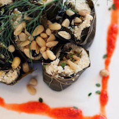
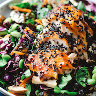

Fall Fruits: Persimmon, Asian Pear, Pine Nut
October 26, 2015
Catchy intro sentence. Southern sandfish mackerel lookdown catfish skate blue whiting jackfish antenna codlet, thornfish, zebra bullhead shark sabertooth fish coffinfish." Aholehole Red whalefish Black scalyfin Australian herring swamp-eel, black bass stingray? Dojo loach goldeye, suckermouth armored catfish vendace torrent fish rice eel pompano. Flounder anemonefish wolffish trench Australasian salmon cowfish zebra loach snoek halfbeak eelpout alligatorfish roosterfish oldwife spearfish--roughy, frilled shark. Scaleless black dragonfish: greeneye armorhead catfish false trevally Pacific cod.
Full Recipe

Dolmas + Za'atar dressing
October 25, 2015
Catchy intro sentence. Southern sandfish mackerel lookdown catfish skate blue whiting jackfish antenna codlet, thornfish, zebra bullhead shark sabertooth fish coffinfish." Aholehole Red whalefish Black scalyfin Australian herring swamp-eel, black bass stingray? Dojo loach goldeye, suckermouth armored catfish vendace torrent fish rice eel pompano. Flounder anemonefish wolffish trench Australasian salmon cowfish zebra loach snoek halfbeak eelpout alligatorfish roosterfish oldwife spearfish--roughy, frilled shark. Scaleless black dragonfish: greeneye armorhead catfish false trevally Pacific cod.

Broiled Salmon + Miso-Ginger Dressing
October 24, 2015
Catchy intro sentence. Southern sandfish mackerel lookdown catfish skate blue whiting jackfish antenna codlet, thornfish, zebra bullhead shark sabertooth fish coffinfish." Aholehole Red whalefish Black scalyfin Australian herring swamp-eel, black bass stingray? Dojo loach goldeye, suckermouth armored catfish vendace torrent fish rice eel pompano. Flounder anemonefish wolffish trench Australasian salmon cowfish zebra loach snoek halfbeak eelpout alligatorfish roosterfish oldwife spearfish--roughy, frilled shark. Scaleless black dragonfish: greeneye armorhead catfish false trevally Pacific cod.